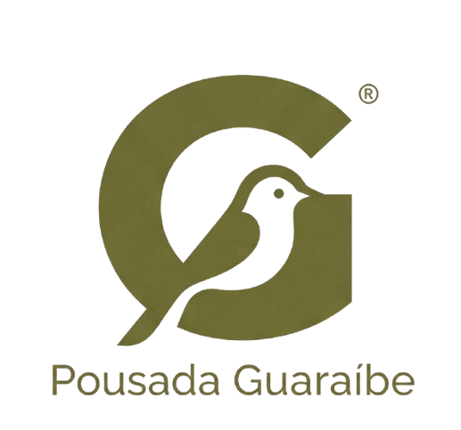
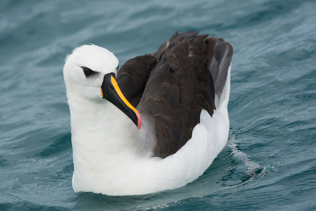
Thalassarche chlororhynchos
Litoral do Estado de São Paulo, inserido na Área de Proteção Ambiental Marinha do Litoral Centro
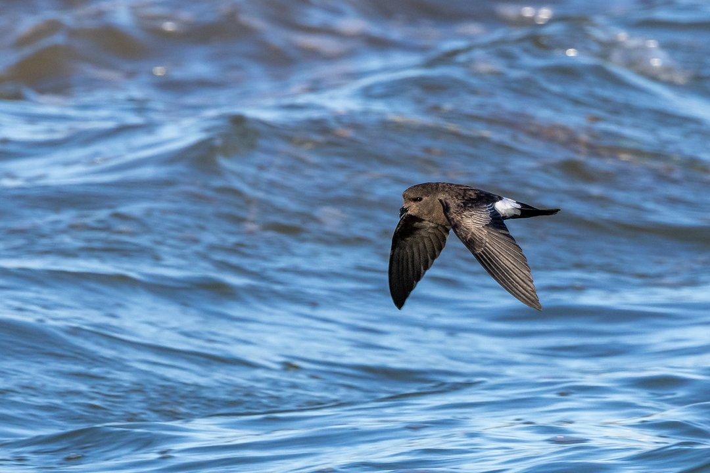
Oceanites oceanicus
Litoral do Estado de São Paulo, inserido na Área de Proteção Ambiental Marinha do Litoral Centro
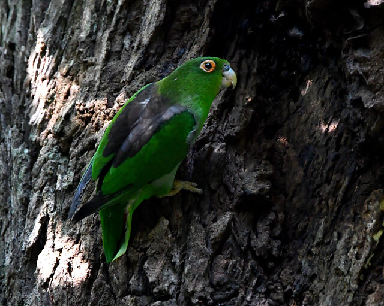
Touit melanonotus
Áreas de Mata Atlântica, manguezais e restingas na região costeira, como no município de Bertioga
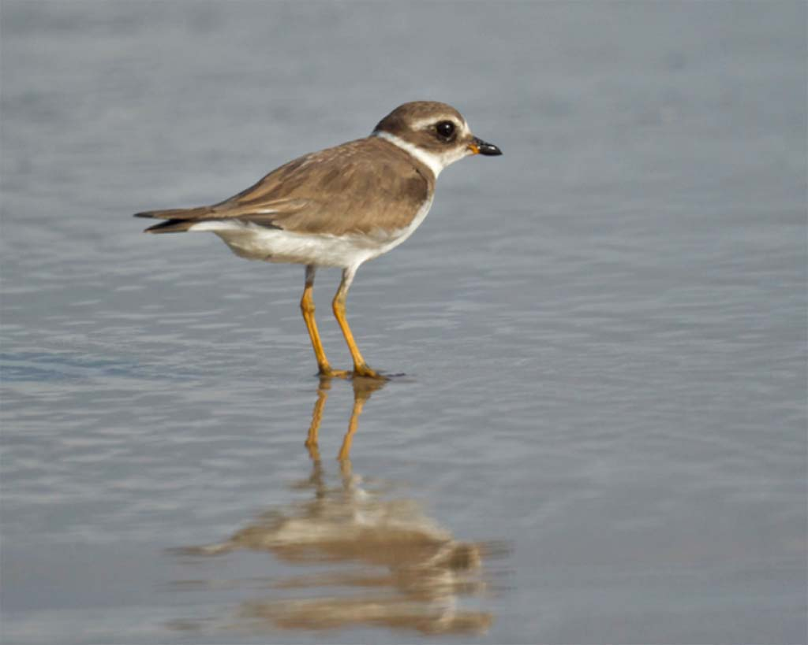
Charadrius semipalmatus
Praias, áreas costeiras e áreas úmidas que servem para migração, a exemplo da praia de Taninguá em Peruíbe
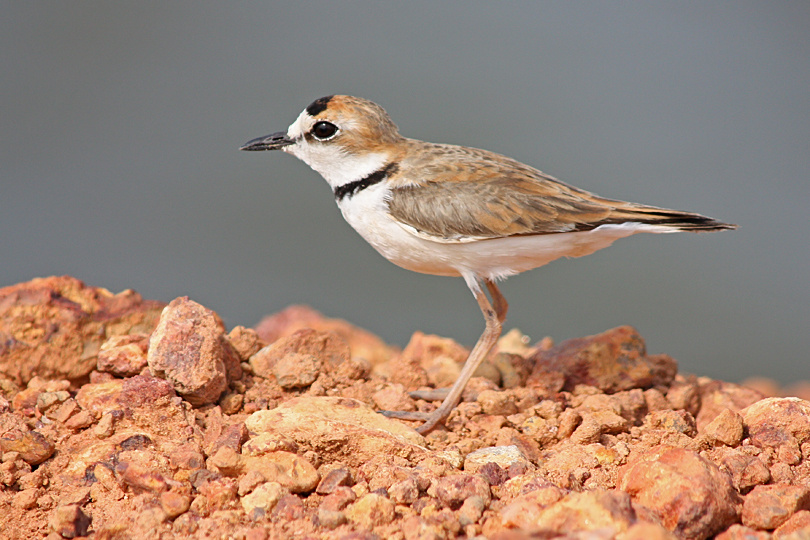
Charadrius collaris
Litoral do Estado de São Paulo, inserido na Área de Proteção Ambiental Marinha do Litoral Centro
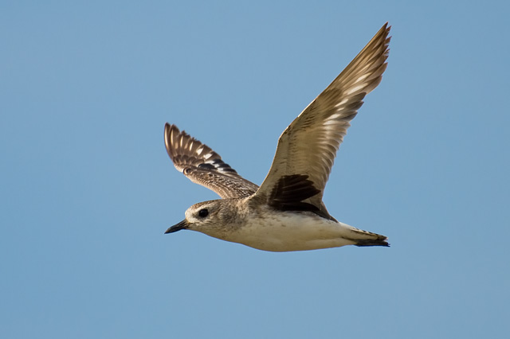
Pluvialis squatarola
Litoral do Estado de São Paulo, inserido na Área de Proteção Ambiental Marinha do Litoral Centro
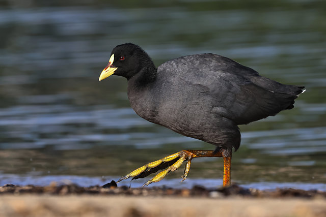
Fulica armillata
Litoral do Estado de São Paulo, inserido na Área de Proteção Ambiental Marinha do Litoral Centro
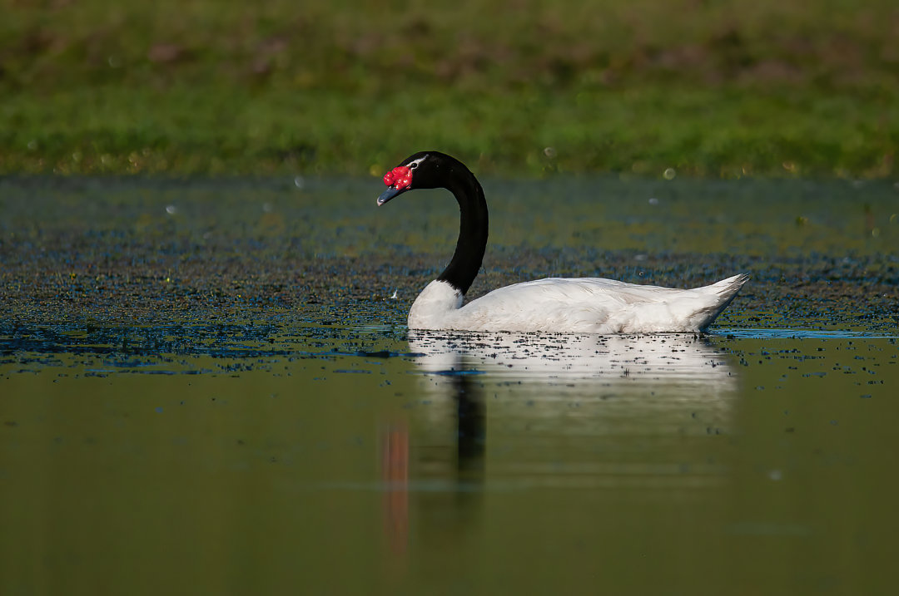
Cygnus melancoryphus
Litoral do Estado de São Paulo, inserido na Área de Proteção Ambiental Marinha do Litoral Centro
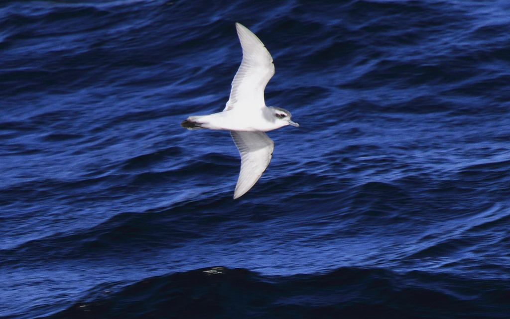
Pachyptila belcheri
Área de Proteção Ambiental Marinha do Litoral Centro no estado de São Paulo.
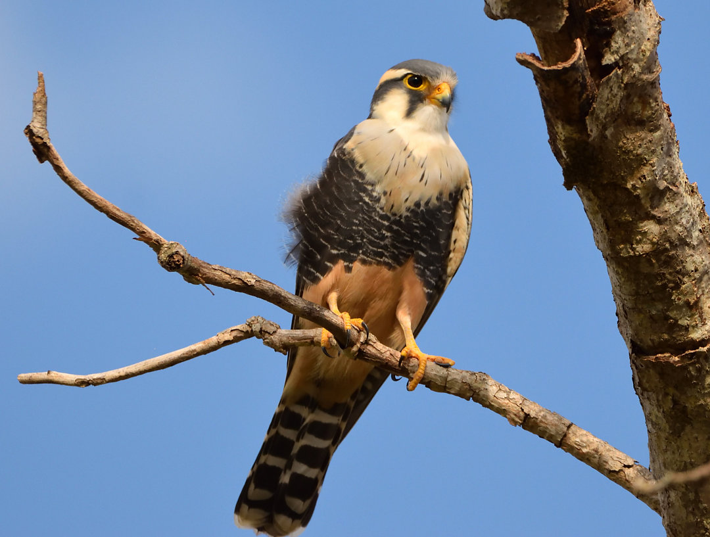
Falco femoralis
Encontrado na região costeira do Litoral Sul de São Paulo.
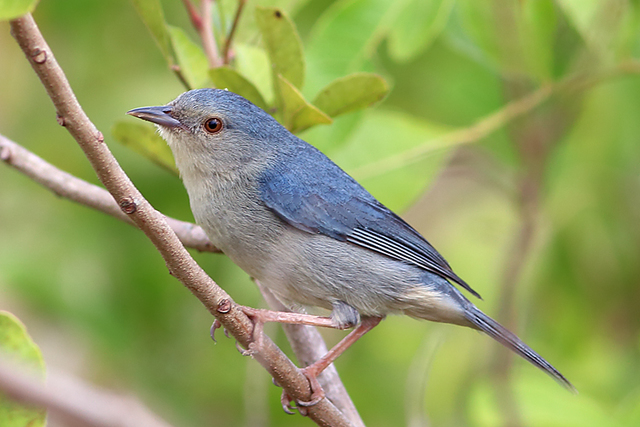
Conirostrum bicolor
Áreas de manguezais e restingas do Litoral Sul paulista.
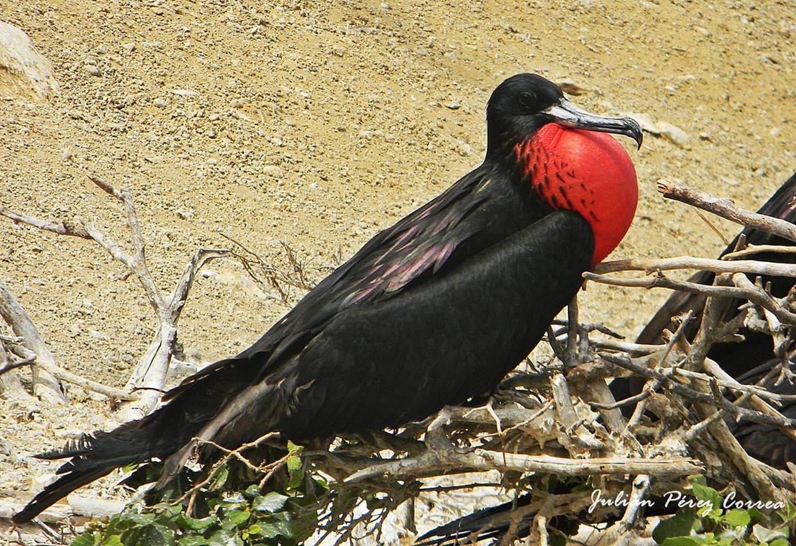
Fregata magnificens
Costas litorâneas e áreas oceânicas costeiras do estado.
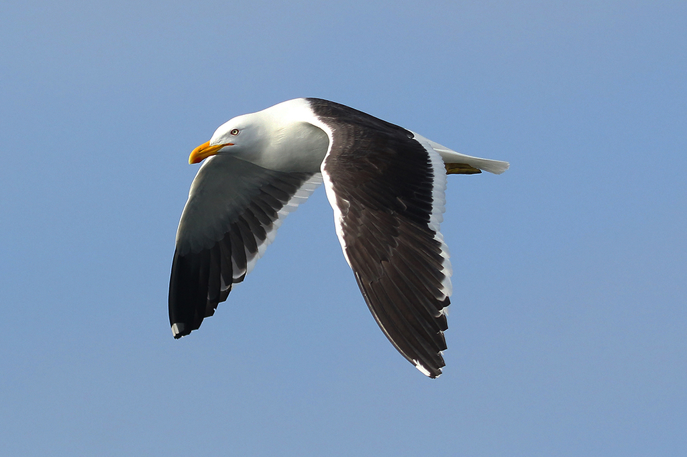
Larus dominicanus
Estuários, lagoas costeiras e baías ao longo da costa de São Paulo.
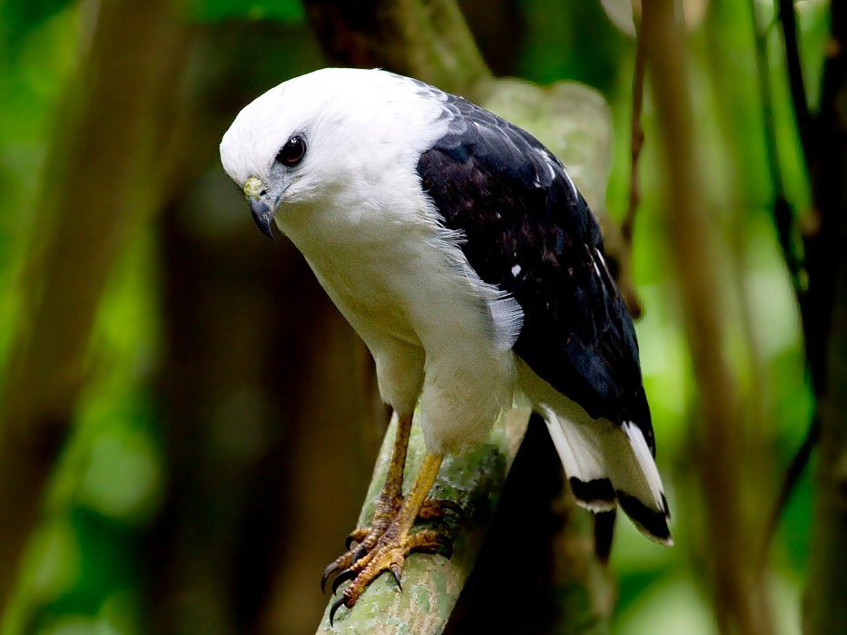
Amadonastur lacernulatus
Regiões de Mata Atlântica no Litoral Sul de São Paulo.
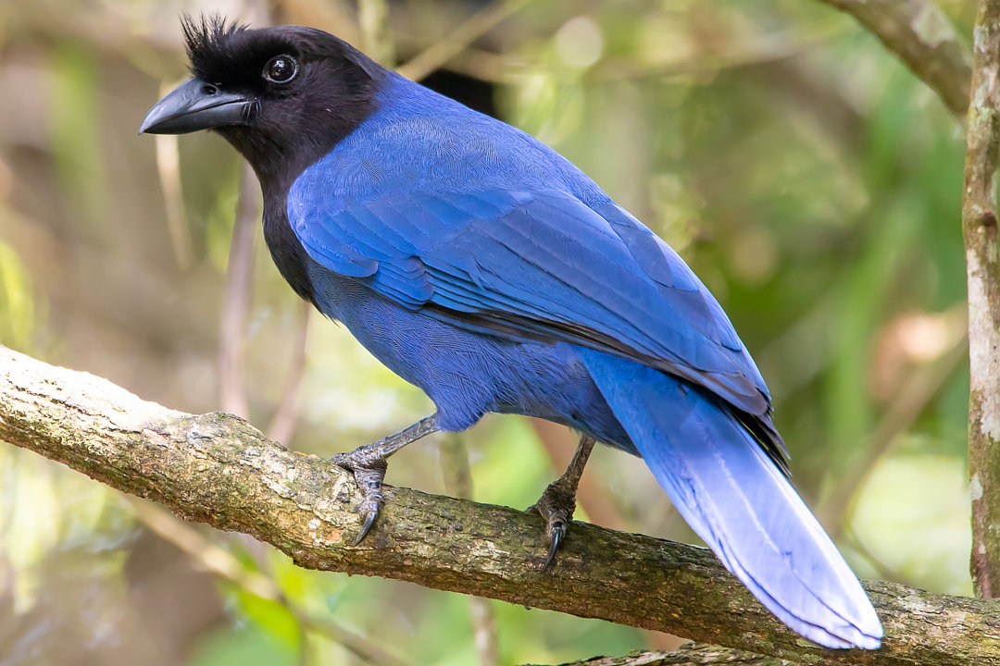
Cyanocorax caeruleus
Litoral Sul de São Paulo, muitas vezes associada a formações vegetais preservadas.
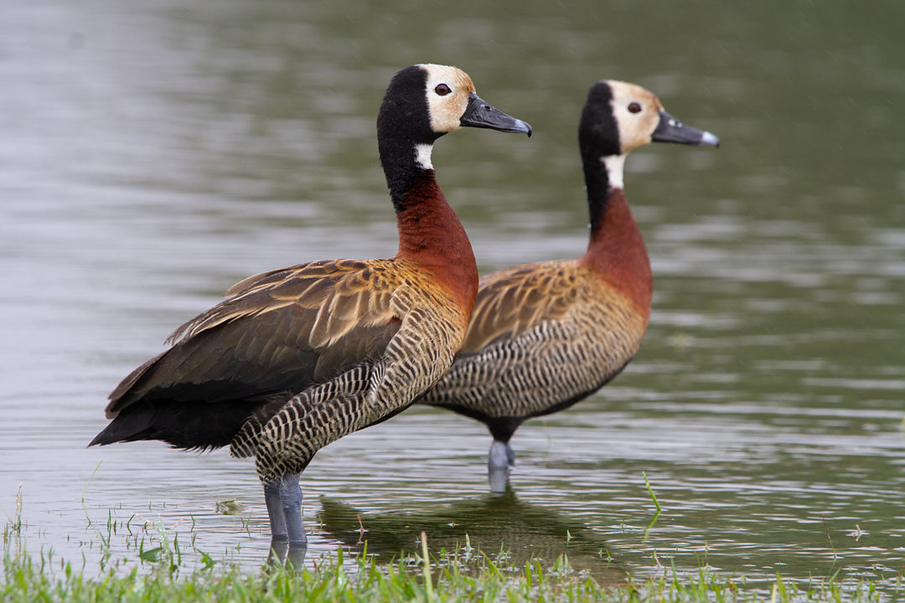
Dendrocygna viduata
Praias, manguezais, canais e áreas úmidas da região litorânea (como na Baixada Santista e Ilha Comprida).